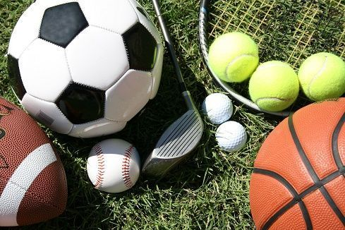
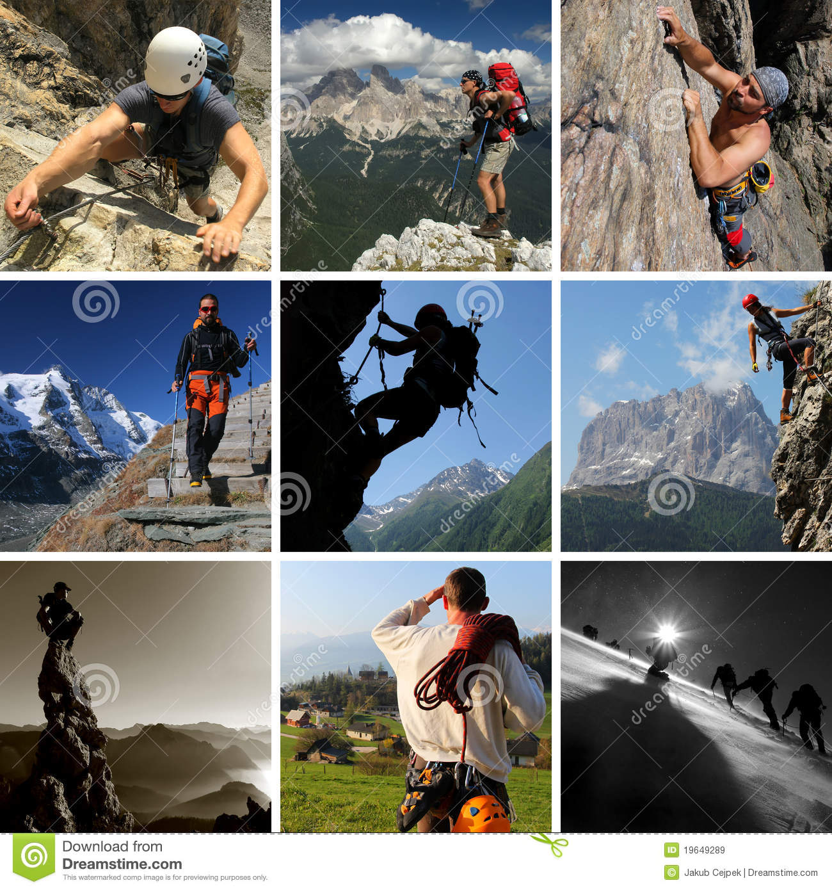

¿Que tipos de deportes hay y cuales son?

Los tipos de deportes existentes son muy diversos. Si se indaga sobre actividades deportivas que pueden ponerse en práctica, no alcanzaría un solo post para mencionar todas las posibilidades; incluso muchas de éstas son desconocidas para la gente. Para distinguir los tipos de deportes, comunes y no comunes, basta con centrarse en una serie de categorías que engloban todas las prácticas deportivas del mundo. Los grupos donde entraría a formar parte cualquier tipo de deporte, por categorías deportivas, son los siguientes: deportes de equipo, deportes de pelota, deportes acuáticos, deportes de montaña, deportes de aventura, deportes de fuerza, deportes extremos, deportes de tiro y deportes de motor.Cabe destacar que, durante los últimos años, actividades electrónicas como los videojuegos de estrategia, videojuegos de disparos y videojuegos multijugadores, se están empezando a considerar deportes. Otro tipo de deportes populares, más peculiares respecto a los habituales, son el ajedrez y la pesca. En este post se citan los deportes más conocidos, que engloban cada una de estas categorías, así como el significado de estos grupos deportivos. Los tipos de deportes existentes son muy diversos. Si se indaga sobre actividades deportivas que pueden ponerse en práctica, no alcanzaría un solo post para mencionar todas las posibilidades; incluso muchas de éstas son desconocidas para la gente. Para distinguir los tipos de deportes, comunes y no comunes, basta con centrarse en una serie de categorías que engloban todas las prácticas deportivas del mundo. Los grupos donde entraría a formar parte cualquier tipo de deporte, por categorías deportivas, son los siguientes: deportes de equipo, deportes de pelota, deportes acuáticos, deportes de montaña, deportes de aventura, deportes de fuerza, deportes extremos, deportes de tiro y deportes de motor.Cabe destacar que, durante los últimos años, actividades electrónicas como los videojuegos de estrategia, videojuegos de disparos y videojuegos multijugadores, se están empezando a considerar deportes. Otro tipo de deportes populares, más peculiares respecto a los habituales, son el ajedrez y la pesca. En este post se citan los deportes más conocidos, que engloban cada una de estas categorías, así como el significado de estos grupos deportivos.
Deportes de equipo

Los deportes de equipo son aquellos en los que dos grupos organizados de deportistas compiten entre sí, al mismo tiempo, para lograr un objetivo. Cada equipo dispone del mismo número de jugadores/as. Los deportes de equipo más destacados son: Fútbol, Baloncesto, Balonmano, Béisbol, Voleibol, Fútbol americano, Rugby y Waterpolo.
Deportes de Pelota
Cuando el elemento con el que se pone en marcha un juego es la pelota, surgen deportes que se llevan a cabo, bien de forma individual, o bien en equipo. Algunos deportes de pelota en los que el objetivo es golpearla son: Golf, Béisbol o Cricket, entre otros. Entre aquellos en los que el fin principal es meter goles o puntuar, se encuentran: Fútbol, Rugby, Baloncesto, Balonmano, Bolos y Hockey. También entran dentro de esta categoría deportes de pelota en los que es necesaria la red, como son: Tenis, Voleibol y Pinng pong, por citar algunos de los más importantes.

Deportes Acuaticos

Aquellos deportes que requieren el agua como escenario, ya sea en el mar, en un río o en piscinas, son los deportes acuáticos. Éstos implican una actividad física que puede practicarse bajo el agua, sobre el agua en la propia agua. Los deportes acuáticos más importantes son: Natación, Waterpolo, Surf, Buceo, Remo, Bodyboarding, Windsurf, Hidrospeed, Saltos acrobáticos, Rafting, Kitesurf y Piragüismo.
Deportes de Montaña
La montaña sirve de medio común para los denominados deportes de montaña. Esta categoría abarca actividades que pueden realizarse tanto a modo de competición como por simple motivo de ocio.